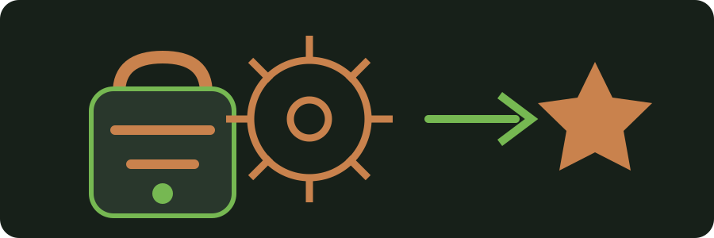

CUSTOM INTEGRATION
Pixelmon Battle Upgrade
A Sophisticated Backpacks upgrade that makes the backpack part of your Pixelmon battle loadout.
How it works
Install the upgrade in a Sophisticated Backpack. Supported Poké Balls, healing items and other battle items stored in that backpack can then be selected from Pixelmon's battle interface. When an item is used, the real stack in the backpack is reduced.
Why use it?
You can organize exploration and battle supplies in the backpack without shuffling them into your normal inventory every time a battle starts. Removing the upgrade also removes battle access to those stored items.
Compatibility
Introduced to Cog & Capture on the Pixelmon 9.3.16 line. The later 0.1.5 build was tested successfully with Pixelmon 9.4.1.